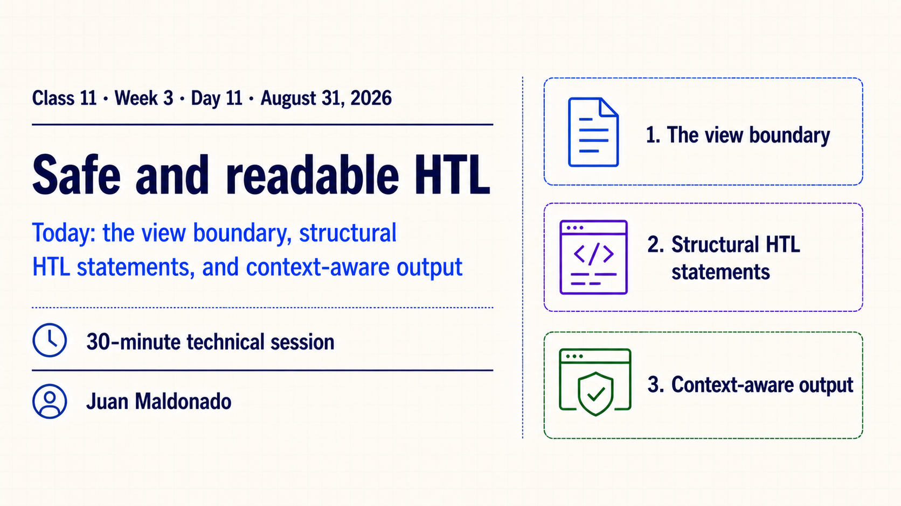
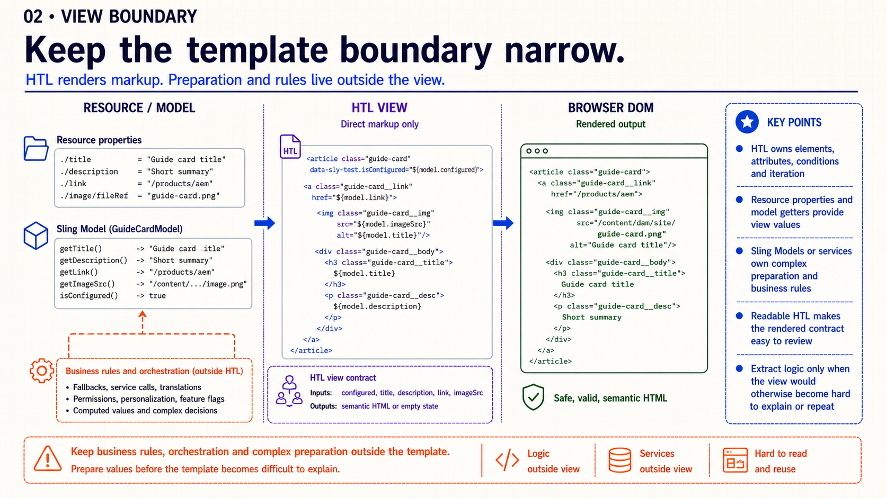
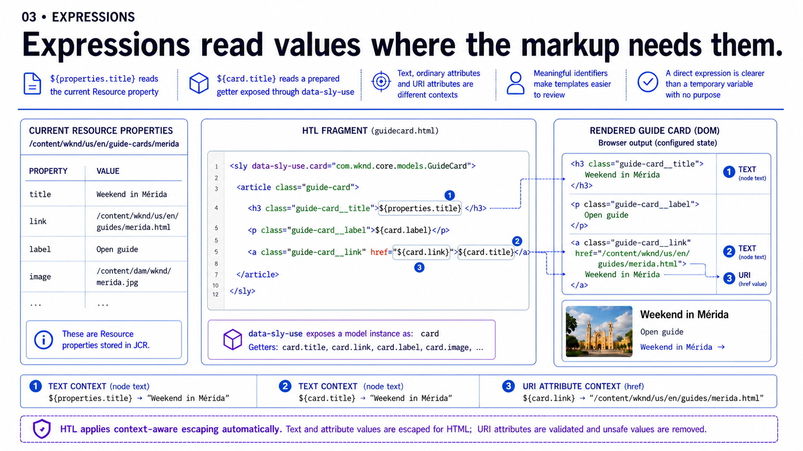
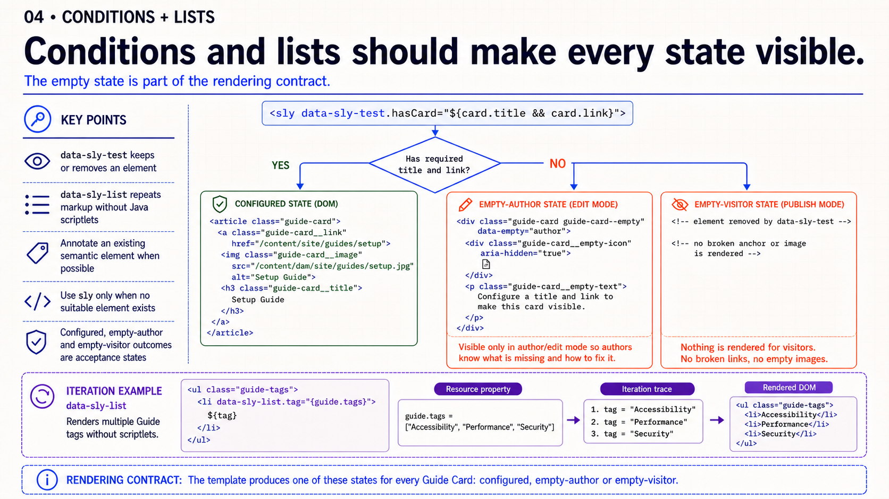
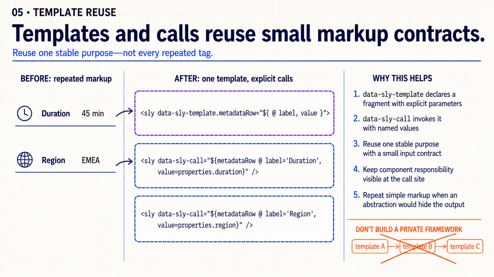
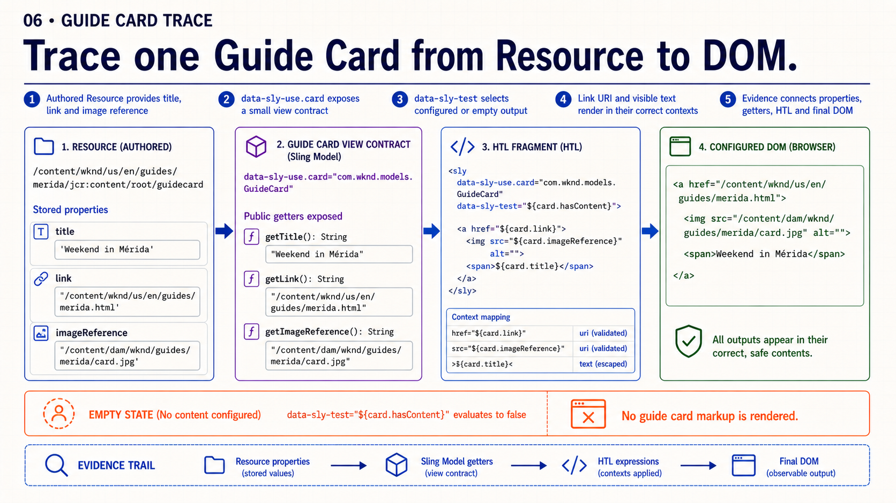
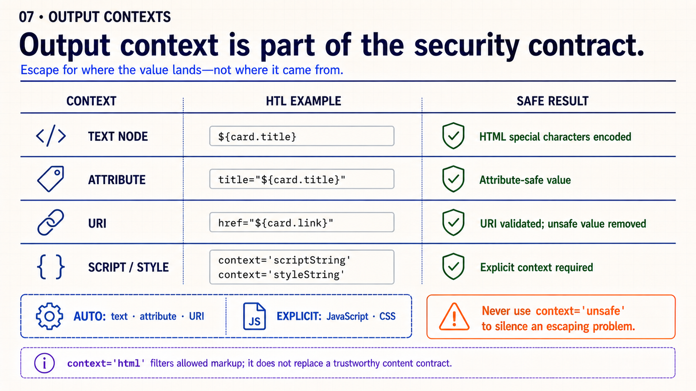
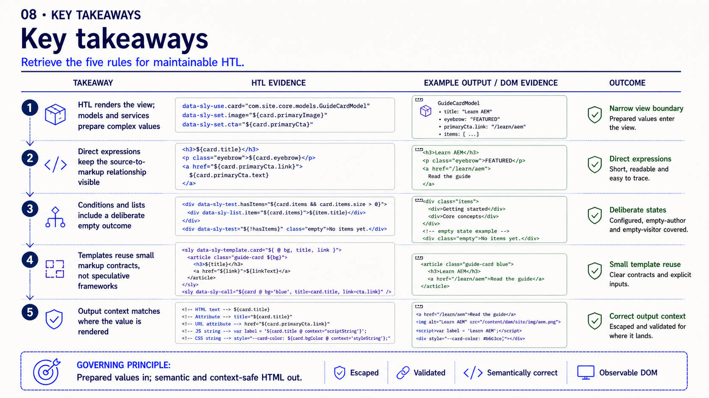
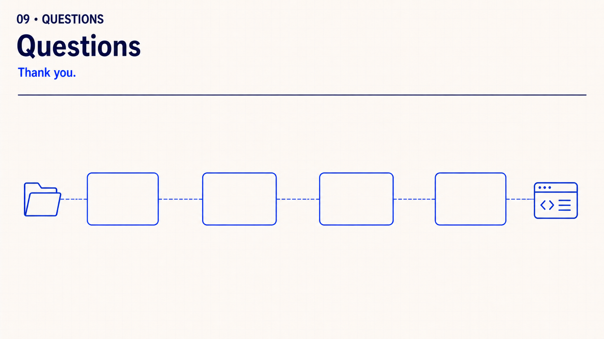

Observable outcome: each developer can trace configured and missing Guide Card data through Resource properties or model getters, HTL statements and the final DOM while identifying the output context of every dynamic value.
Topic summary
HTL is the view layer in an AEM component. It reads direct Resource properties or prepared getters and turns them into semantic HTML. Expressions keep values close to the markup that consumes them, while block statements such as data-sly-test and data-sly-list express conditional structure and iteration without Java scriptlets.
A readable template also exposes its failure behavior and security contract. Configured, empty-author and empty-visitor states must be deliberate, and every dynamic value must be escaped for the context where it lands. Complex preparation belongs behind a small Sling Model or service boundary only when direct HTL would otherwise become difficult to explain or repeat.
- Narrow view boundary: HTL owns elements, attributes, conditions and iteration; models or services own complex preparation and business rules.
- Direct expressions: names such as
properties.title and card.link keep the source-to-markup relationship visible.
- Deliberate states: configured data renders semantic content, edit mode guides the author and the visitor does not receive broken empty markup.
- Small reuse contracts:
data-sly-template and data-sly-call remove stable repetition without creating a private rendering framework.
- Context-aware output: HTL distinguishes text, attributes and URI values, while JavaScript and CSS expressions require an explicit display context.
- Review evidence: connect stored properties, getters, HTL source and rendered DOM instead of accepting isolated screenshots.
Architect preparation
- Prepare one configured Guide Card Resource and one instance missing a required title or link.
- Keep the stored values, model getters and rendered DOM open side by side, or use the supplied evidence slides.
- Prepare one safe URI and one unsafe URI example without executing untrusted content.
- Use local Author only for confirmation; the slide evidence is sufficient if the SDK is unavailable.
Learning objectives
- separate direct markup production from complex value preparation;
- read Resource properties and model getters with concise HTL expressions;
- render configured and empty states with
data-sly-test and lists with data-sly-list;
- reuse a small markup fragment through a clear template contract;
- identify automatic and explicit output contexts before reviewing the DOM.
30-minute agenda
| Time | Activity | Facilitation |
|---|
| 0–3 | Retrieval | Ask: “Which layer should prepare data, and which layer should render it?” |
| 3–15 | Slides 1–4 | Define the view boundary, read expressions and compare configured with empty states. |
| 15–24 | Slides 5–7 | Review small template reuse, trace one Guide Card and classify output contexts. |
| 24–27 | Slide 8 | Retrieve the five HTL review checkpoints. |
| 27–30 | Slide 9 | Questions only; no review exercise or assignment handoff. |
Complete slide deck
Study each slide with its detailed presenter notes, then copy it into PowerPoint or download its PNG.

Detailed presenter notes
- Present: identify the session, presenter, date and 30-minute scope.
- Preview: the view-layer boundary, deliberate rendering states and context-aware output.
- Transition: move into the responsibility boundary before reading syntax.

Detailed presenter notes
- Meaning: HTL owns visible markup decisions; complex preparation and business rules remain outside the view.
- Present: read the three lanes from Resource or Model through HTL to the DOM.
- Say: “Do not create a Sling Model merely to hide a readable property expression.”
- Check: can a reviewer predict the rendered contract by reading the template?

Detailed presenter notes
- Meaning: expressions keep each value close to the element or attribute that consumes it.
- Present: trace
${properties.title}, ${card.title} and ${card.link} to the DOM.
- Say: “A direct expression is clearer than a temporary alias with no purpose.”
- Ask: which expression lands in text and which lands in a URI?

Detailed presenter notes
- Meaning:
data-sly-test and data-sly-list express structural outcomes without Java scriptlets.
- Present: compare configured, empty-author and empty-visitor states separately.
- Say: “The empty state is part of the rendering contract.”
- Ask: which evidence proves the visitor received no broken anchor or image?

Detailed presenter notes
- Meaning: a useful template has one stable purpose and a small, explicit input contract.
- Present: compare the repeated rows with
metadataRow(label, value).
- Say: “Reuse one stable purpose—not every repeated tag.”
- Warning: nested generic templates create a private framework that hides final markup.

Detailed presenter notes
- Meaning: one review artifact should connect stored values, getters, HTL and browser evidence.
- Present: carry the same title, link and image reference through every checkpoint.
- Say: “Separate screenshots are not a trace until their values connect.”
- Check: remove one required value and confirm the safe empty outcome.

Detailed presenter notes
- Meaning: output handling follows where a value lands, not where it originated.
- Present: read text, attribute, URI and script or style rows in order.
- Say: “Do not use
context='unsafe' to make suppressed output appear.”
- Ask: classify the Guide title, link and an inline-script value.

Detailed presenter notes
- Present: ask for the five checkpoints before revealing their evidence.
- Say: “Prepared values in; semantic and context-safe HTML out.”
- Evidence: Resource or getter, expression, empty DOM, template call and output context.
- Check: ask which checkpoint would catch a
javascript: card link.

Detailed presenter notes
- Close: thank the audience and leave the floor open for questions they want to raise.
- Boundary: do not introduce prompts, a review exercise or another activity.
Guide Card HTL exercise
- Record the Guide Card Resource path and the properties used by the view.
- Render configured title and link values with concise HTL expressions.
- Define the author-visible and visitor-safe outcomes when required data is missing.
- Identify the text, attribute or URI context of each dynamic value.
- Capture the stored value, HTL source and final DOM as one trace.
Acceptance: configured and missing states produce valid semantic markup, HTL contains no business orchestration and every dynamic value uses the correct output context.
Practice bridge: apply the trace to Week 3 · Deliver the Guide Card frontend slice.
Official reading
{kind=link}
{kind=link}
{kind=link}
{kind=link}
{kind=link}
{kind=link}
{kind=link}
{kind=link}
{kind=link}